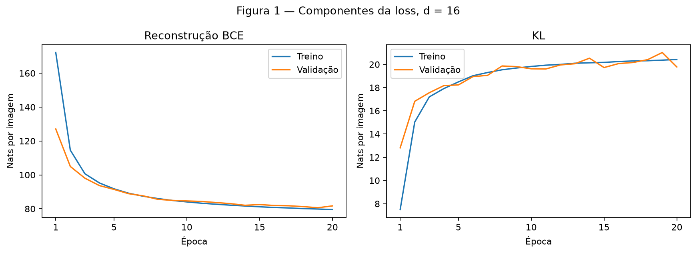
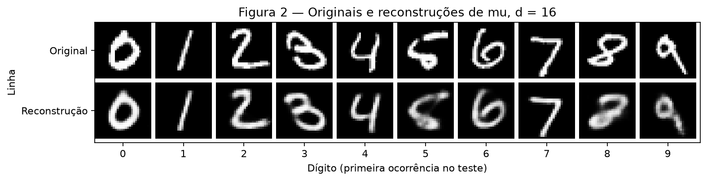
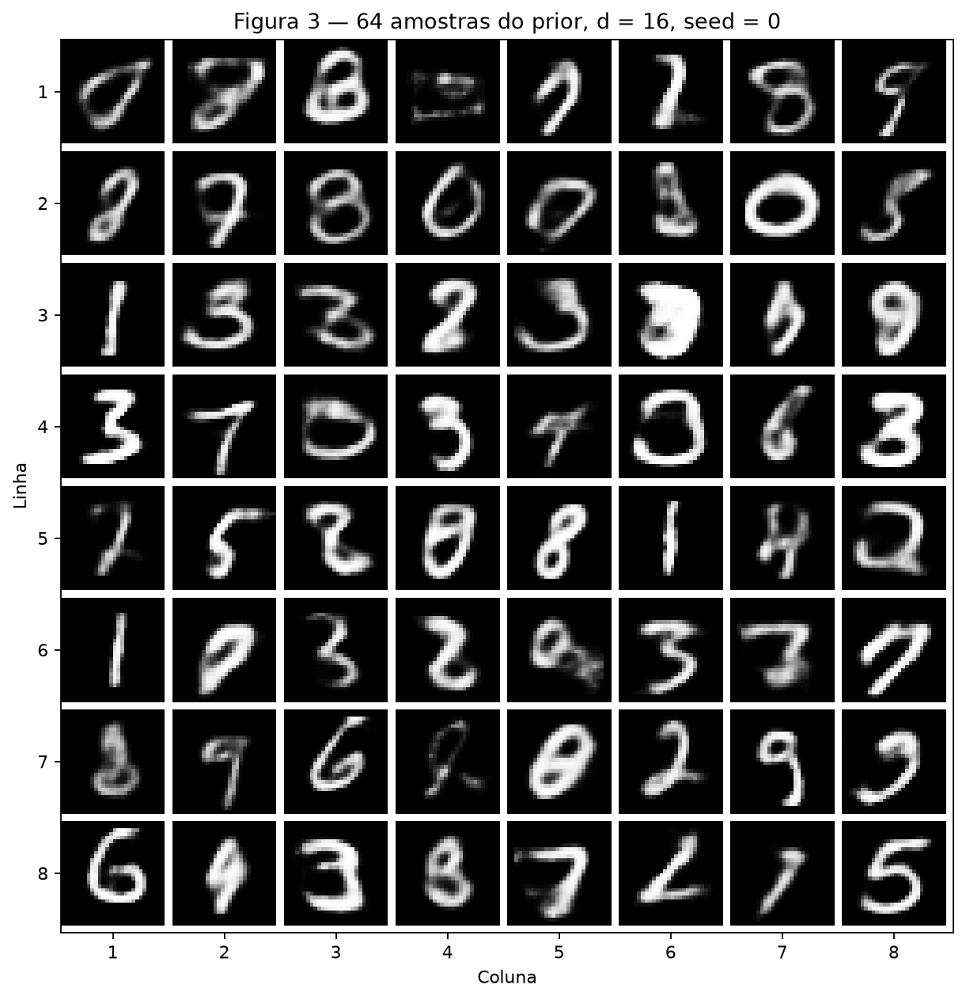
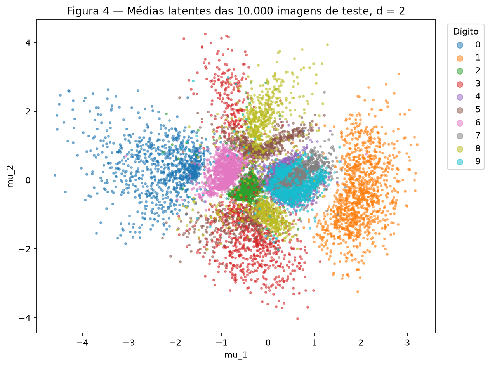
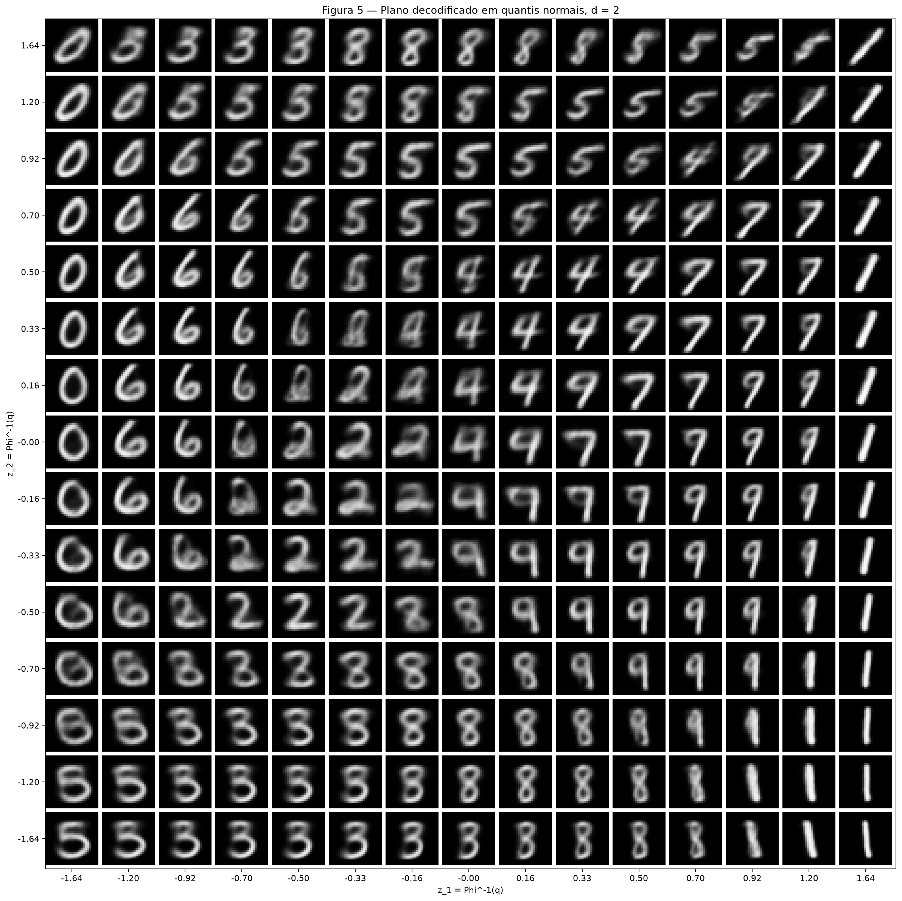
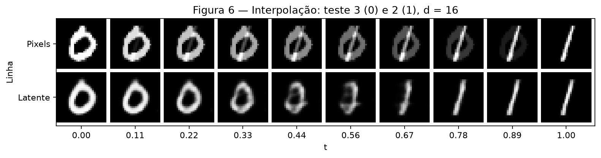

Atividade 4 — Variational Autoencoders
Aluno: Daniel Marco Djanikian. Artificial Neural Networks and Deep Learning, Insper, 2026.2.
Referências: enunciado e rubrica de 2026.2 e regras de submissão. Foram executados exatamente dois modelos totalmente conectados, com o protocolo fixo da atividade. Os rótulos dos dígitos não entram no treinamento.
Exercise 1
A — Load and split the data
MNIST foi baixado com torchvision.datasets.MNIST. transforms.ToTensor()
converte cada imagem de 28 × 28 pixels para float32 em [0, 1]; o encoder
achata a imagem em 784 valores. Não há outras transformações.
As 60.000 imagens oficiais de treinamento foram separadas em 50.000 de
treino e 10.000 de validação com random_split e
torch.Generator().manual_seed(42). As 10.000 imagens oficiais de teste
foram carregadas e avaliadas somente após concluir os dois treinamentos.
O código verifica que os índices são reproduzíveis, disjuntos e cobrem as
60.000 imagens, além das dimensões, tipo e intervalo dos pixels.
B — Build the model
Uma única classe VAE(nn.Module) implementa ambos os exercícios:
| Parte | Camadas |
|---|---|
| Encoder | Linear 784 → 512, ReLU, Linear 512 → 256, ReLU |
| Heads | Duas Linear 256 → d, independentes: mu e logvar |
| Decoder | Linear d → 256, ReLU, Linear 256 → 512, ReLU, Linear 512 → 784, Sigmoid |
Aqui d = 16, com 1.079.600 parâmetros treináveis.
mu é o centro da distribuição latente da imagem; logvar é o logaritmo
da variância em cada dimensão. A covariância é diagonal:
O logaritmo permite que a rede produza qualquer número real, mantendo a variância positiva após a exponencial. A amostragem é escrita explicitamente:
O ruído não depende dos pesos. Fixado esse ruído durante cada forward, z
é uma função diferenciável de mu e logvar, permitindo que o gradiente
da reconstrução chegue ao encoder. O decoder retorna 784 probabilidades
entre 0 e 1, usadas diretamente nas imagens exibidas.
Para um batch de B imagens, com β = 1, a loss é:
A BCE penaliza reconstruções incompatíveis com os pixels, sob uma likelihood
Bernoulli. A KL penaliza o afastamento de q(z|x) do prior normal padrão.
Ambas são somadas nas dimensões e divididas apenas pelo número de imagens;
portanto, todas as perdas são dadas em nats por imagem. A KL é implementada
pela fórmula acima, sem funções de distribuições. A BCE usa
F.binary_cross_entropy(..., reduction="sum") / B, conforme o enunciado.
Código completo executado, incluindo verificações, treinamento e figuras:
"""Insper 2026.2: dois VAEs MNIST, seis figuras e resultados reais em JSON.
Executar: python docs/exercises/vae/code/vae.py
O download fica em data/MNIST (ignorado pelo Git); nenhum checkpoint é salvo.
"""
import json
import os
from pathlib import Path
import platform
import sys
import matplotlib
matplotlib.use("Agg")
import matplotlib.pyplot as plt
import numpy as np
from scipy.stats import norm
import scipy
import torch
from torch import nn
from torch.nn import functional as F
from torch.utils.data import DataLoader, random_split
import torchvision
from torchvision import datasets, transforms
ROOT = Path(__file__).resolve().parents[4]
OUTPUT = Path(__file__).resolve().parents[1]
SEED, EPOCHS, BATCH_SIZE, LEARNING_RATE = 42, 20, 128, 1e-3
class VAE(nn.Module):
"""Mesma arquitetura em ambos os exercícios; apenas d muda."""
def __init__(self, d=16):
super().__init__()
self.encoder = nn.Sequential(
nn.Linear(784, 512), nn.ReLU(), nn.Linear(512, 256), nn.ReLU()
)
self.mu = nn.Linear(256, d)
self.logvar = nn.Linear(256, d)
self.decoder = nn.Sequential(
nn.Linear(d, 256), nn.ReLU(), nn.Linear(256, 512), nn.ReLU(),
nn.Linear(512, 784), nn.Sigmoid()
)
def encode(self, x):
h = self.encoder(x.flatten(1))
return self.mu(h), self.logvar(h)
def reparameterize(self, mu, logvar):
# Ruído independente dos parâmetros; mu e std continuam diferenciáveis.
std = torch.exp(0.5 * logvar)
eps = torch.randn_like(std)
return mu + std * eps
def decode(self, z):
return self.decoder(z)
def forward(self, x):
mu, logvar = self.encode(x)
return self.decode(self.reparameterize(mu, logvar)), mu, logvar
def loss_terms(reconstruction, x, mu, logvar):
"""BCE + KL analítica, somadas por imagem e médias no batch; beta = 1."""
x = x.flatten(1)
assert reconstruction.shape == x.shape and x.shape[1] == 784
assert mu.shape == logvar.shape and mu.shape[0] == x.shape[0]
bce = F.binary_cross_entropy(reconstruction, x, reduction="sum") / len(x)
kl = 0.5 * (mu.square() + logvar.exp() - 1 - logvar).sum() / len(x)
return bce + kl, bce, kl
def validate_implementation():
"""Conferências independentes, sem consumir a seed dos experimentos."""
with torch.random.fork_rng(devices=[]):
torch.manual_seed(SEED)
x = torch.rand(3, 1, 28, 28)
prediction = torch.full((3, 784), 0.25, dtype=torch.float64,
requires_grad=True)
mu = torch.zeros(3, 2, dtype=torch.float64, requires_grad=True)
logvar = torch.zeros_like(mu, requires_grad=True)
total, bce, kl = loss_terms(prediction, x.double(), mu, logvar)
# BCE calculada diretamente pelos logaritmos, não pelo helper PyTorch.
expected = -(x.double().flatten(1) * prediction.log()
+ (1 - x.double().flatten(1)) * torch.log1p(-prediction))
torch.testing.assert_close(bce, expected.sum(1).mean())
assert kl.item() == 0
shifted = loss_terms(prediction, x.double(), mu + 1, logvar)[2]
torch.testing.assert_close(shifted, torch.tensor(1., dtype=torch.float64))
variance_kl = loss_terms(prediction, x.double(), mu,
logvar + np.log(4))[2]
torch.testing.assert_close(variance_kl, torch.tensor(
4 - 1 - np.log(4), dtype=torch.float64))
# Repetir imagens não pode mudar a média por imagem, inclusive a KL.
repeated = loss_terms(prediction.repeat(2, 1), x.double().repeat(2, 1, 1, 1),
(mu + 1).repeat(2, 1), (logvar + np.log(4)).repeat(2, 1))
original = loss_terms(prediction, x.double(), mu + 1, logvar + np.log(4))
for a, b in zip(repeated, original):
torch.testing.assert_close(a, b)
assert torch.autograd.gradcheck(
lambda p, m, v: loss_terms(p, x.double(), m, v)[0],
(prediction, mu, logvar), fast_mode=True
)
for d in (16, 2):
model = VAE(d)
reconstruction, m, v = model(x)
assert reconstruction.shape == (3, 784) and m.shape == v.shape == (3, d)
assert torch.isfinite(reconstruction).all()
assert ((reconstruction >= 0) & (reconstruction <= 1)).all()
# Verificar a fórmula e as derivadas com o mesmo epsilon.
m = m.detach().requires_grad_()
v = v.detach().requires_grad_()
torch.manual_seed(123)
epsilon = torch.randn_like(m)
torch.manual_seed(123)
z = model.reparameterize(m, v)
torch.testing.assert_close(z, m + (0.5 * v).exp() * epsilon)
gm, gv = torch.autograd.grad(z.sum(), (m, v))
torch.testing.assert_close(gm, torch.ones_like(m))
torch.testing.assert_close(gv, 0.5 * (0.5 * v).exp() * epsilon)
optimizer = torch.optim.Adam(model.parameters(), lr=LEARNING_RATE)
before = model.encoder[0].weight.detach().clone()
reconstruction, m, v = model(x)
loss_terms(reconstruction, x, m, v)[0].backward()
assert all(p.grad is not None and torch.isfinite(p.grad).all()
for p in model.parameters())
optimizer.step()
assert not torch.equal(before, model.encoder[0].weight)
return {"BCE_logarithms": True, "KL_zero_shift_variance": True,
"batch_reduction": True, "loss_gradcheck": True,
"shapes_range": True, "reparameterization_gradients": True,
"finite_gradients_parameter_update": True}
def run_epoch(model, loader, device, optimizer=None):
"""Validação/teste não alteram pesos; os rótulos são ignorados."""
training = optimizer is not None
model.train(training)
before = [p.detach().clone() for p in model.parameters()] if not training else None
totals = np.zeros(3)
count = 0
with torch.set_grad_enabled(training):
for images, _ in loader:
x = images.to(device)
reconstruction, mu, logvar = model(x)
assert reconstruction.requires_grad == training
terms = loss_terms(reconstruction, x, mu, logvar)
assert torch.isfinite(torch.stack(terms)).all(), "Loss não finita"
if training:
optimizer.zero_grad()
terms[0].backward()
assert all(torch.isfinite(p.grad).all() for p in model.parameters())
optimizer.step()
totals += np.array([v.item() for v in terms]) * len(x)
count += len(x)
if not training:
assert all(torch.equal(a, b) for a, b in zip(before, model.parameters())), \
"Pesos alterados na avaliação"
return dict(zip(("total", "reconstruction", "kl"), (totals / count).tolist()))
def train_model(d, train, val, device):
# Reset antes de CADA modelo; mesma ordem de batches nas duas dimensões.
torch.manual_seed(SEED)
model = VAE(d).to(device)
optimizer = torch.optim.Adam(model.parameters(), lr=LEARNING_RATE)
train_loader = DataLoader(train, batch_size=BATCH_SIZE, shuffle=True,
generator=torch.Generator().manual_seed(SEED))
val_loader = DataLoader(val, batch_size=BATCH_SIZE,
generator=torch.Generator().manual_seed(SEED))
history = []
for epoch in range(1, EPOCHS + 1):
training = run_epoch(model, train_loader, device, optimizer)
validation = run_epoch(model, val_loader, device)
history.append({"epoch": epoch, "train": training, "validation": validation})
print(f"d={d:2} época={epoch:02} treino={training['total']:.3f} "
f"val={validation['total']:.3f} BCE={validation['reconstruction']:.3f} "
f"KL={validation['kl']:.3f}", file=sys.stderr, flush=True)
assert history[-1]["validation"]["total"] < history[0]["validation"]["total"]
return model, {"parameters": sum(p.numel() for p in model.parameters()),
"history": history}
def save_figure(fig, number):
fig.savefig(OUTPUT / "figures" / f"fig{number}.png", dpi=160, bbox_inches="tight")
plt.close(fig)
def image_grid(images, rows, columns, title, row_labels=None, column_labels=None):
"""Um único mosaico: eixos identificam imagens e linhas, não intensidade."""
values = images.detach().cpu().reshape(rows, columns, 28, 28).numpy()
canvas = np.ones((rows * 30, columns * 30))
for row in range(rows):
for col in range(columns):
canvas[row * 30:row * 30 + 28, col * 30:col * 30 + 28] = values[row, col]
fig, ax = plt.subplots(figsize=(max(8, columns), max(2.6, rows)))
ax.imshow(canvas, cmap="gray", vmin=0, vmax=1)
ax.set(title=title, xlabel="Coluna", ylabel="Linha")
ax.set_xticks(np.arange(columns) * 30 + 13.5,
column_labels if column_labels is not None else range(1, columns + 1))
ax.set_yticks(np.arange(rows) * 30 + 13.5,
row_labels if row_labels is not None else range(1, rows + 1))
fig.tight_layout()
return fig, ax
@torch.no_grad()
def make_figures(models, results, test, device):
model16, model2 = models
model16.eval()
model2.eval()
fig, axes = plt.subplots(1, 2, figsize=(11, 4))
history = results["d16"]["history"]
for ax, term, name in zip(axes, ("reconstruction", "kl"), ("Reconstrução BCE", "KL")):
for split, label in (("train", "Treino"), ("validation", "Validação")):
ax.plot(range(1, EPOCHS + 1), [row[split][term] for row in history], label=label)
ax.set(title=name, xlabel="Época", ylabel="Nats por imagem", xticks=[1, 5, 10, 15, 20])
ax.legend()
fig.suptitle("Figura 1 — Componentes da loss, d = 16")
fig.tight_layout()
save_figure(fig, 1)
indices = [int((test.targets == digit).nonzero()[0].item()) for digit in range(10)]
images = torch.stack([test[index][0] for index in indices]).to(device)
reconstruction = model16.decode(model16.encode(images)[0])
fig, ax = image_grid(torch.cat((images.flatten(1), reconstruction)), 2, 10,
"Figura 2 — Originais e reconstruções de mu, d = 16",
["Original", "Reconstrução"], list(range(10)))
ax.set_xlabel("Dígito (primeira ocorrência no teste)")
save_figure(fig, 2)
torch.manual_seed(0)
generated = model16.decode(torch.randn(64, 16, device=device))
fig, _ = image_grid(generated, 8, 8, "Figura 3 — 64 amostras do prior, d = 16, seed = 0")
save_figure(fig, 3)
means, labels = [], []
for x, y in DataLoader(test, batch_size=BATCH_SIZE):
means.append(model2.encode(x.to(device))[0].cpu())
labels.append(y)
means, labels = torch.cat(means).numpy(), torch.cat(labels).numpy()
assert means.shape == (10_000, 2) and np.isfinite(means).all()
fig, ax = plt.subplots(figsize=(8, 6))
for digit in range(10):
points = means[labels == digit]
ax.scatter(points[:, 0], points[:, 1], s=5, alpha=0.5,
color=plt.get_cmap("tab10")(digit), label=str(digit))
ax.set(title="Figura 4 — Médias latentes das 10.000 imagens de teste, d = 2",
xlabel="mu_1", ylabel="mu_2")
ax.legend(title="Dígito", markerscale=3, bbox_to_anchor=(1.02, 1), loc="upper left")
fig.tight_layout()
save_figure(fig, 4)
quantiles = np.linspace(0.05, 0.95, 15)
coordinates = norm.ppf(quantiles)
# mu_2 cresce de baixo para cima, na mesma orientação do scatter.
points = np.array([(a, b) for b in coordinates[::-1] for a in coordinates])
plane = model2.decode(torch.tensor(points, dtype=torch.float32, device=device))
fig, ax = image_grid(plane, 15, 15, "Figura 5 — Plano decodificado em quantis normais, d = 2",
[f"{v:.2f}" for v in coordinates[::-1]],
[f"{v:.2f}" for v in coordinates])
ax.set(xlabel="z_1 = Phi^-1(q)", ylabel="z_2 = Phi^-1(q)")
save_figure(fig, 5)
# Escolha fixa anterior à inspeção: primeiras ocorrências de 0 e 1.
a, b = indices[0], indices[1]
endpoints = torch.stack([test[a][0], test[b][0]]).to(device).flatten(1)
mu = model16.encode(endpoints)[0]
t = torch.linspace(0, 1, 10, device=device).unsqueeze(1)
pixels = (1 - t) * endpoints[0] + t * endpoints[1]
latent = model16.decode((1 - t) * mu[0] + t * mu[1])
fig, ax = image_grid(torch.cat((pixels, latent)), 2, 10,
f"Figura 6 — Interpolação: teste {a} (0) e {b} (1), d = 16",
["Pixels", "Latente"], [f"{v:.2f}" for v in t.flatten().tolist()])
ax.set_xlabel("t")
save_figure(fig, 6)
return {"first_test_indices_by_digit": indices, "interpolation_indices": [a, b],
"scatter_points": len(means), "plane_quantiles": quantiles.tolist()}
def main():
# CPU com uma thread evita oversubscription; CUDA é usado se disponível.
os.environ.setdefault("CUBLAS_WORKSPACE_CONFIG", ":4096:8")
torch.set_num_threads(1)
torch.use_deterministic_algorithms(True)
np.random.seed(SEED)
device = torch.device("cuda" if torch.cuda.is_available() else "cpu")
checks = validate_implementation()
train_full = datasets.MNIST(ROOT / "data", train=True, download=True,
transform=transforms.ToTensor())
train, val = random_split(train_full, [50_000, 10_000],
generator=torch.Generator().manual_seed(SEED))
again, _ = random_split(train_full, [50_000, 10_000],
generator=torch.Generator().manual_seed(SEED))
assert train.indices == again.indices
assert len(set(train.indices) & set(val.indices)) == 0
assert len(set(train.indices) | set(val.indices)) == 60_000
assert train_full.data.shape == (60_000, 28, 28)
assert train_full.data.dtype == torch.uint8
assert train_full.data.min() == 0 and train_full.data.max() == 255
batch = next(iter(DataLoader(val, batch_size=BATCH_SIZE)))[0]
assert batch.shape == (128, 1, 28, 28) and batch.dtype == torch.float32
assert batch.min() == 0 and batch.max() == 1 and torch.isfinite(batch).all()
checks.update({"split_reproducible_disjoint_complete": True, "data_range_shape": True})
results = {"config": {"seed": SEED, "epochs": EPOCHS, "batch_size": BATCH_SIZE,
"learning_rate": LEARNING_RATE, "beta": 1, "device": str(device),
"threads": torch.get_num_threads(), "train": len(train),
"validation": len(val), "test": 10_000},
"versions": {"python": platform.python_version(), "torch": torch.__version__,
"torchvision": torchvision.__version__, "numpy": np.__version__,
"matplotlib": matplotlib.__version__, "scipy": scipy.__version__},
"checks": checks}
models = []
# Treinar AMBOS antes de carregar/avaliar teste: nenhuma decisão vem do teste.
for d in (16, 2):
model, record = train_model(d, train, val, device)
models.append(model)
results[f"d{d}"] = record
test = datasets.MNIST(ROOT / "data", train=False, download=True,
transform=transforms.ToTensor())
assert test.data.shape == (10_000, 28, 28)
test_loader = DataLoader(test, batch_size=BATCH_SIZE,
generator=torch.Generator().manual_seed(SEED))
for d, model in zip((16, 2), models):
# Uma amostra de q(z|x) por imagem estima a BCE da ELBO, não decode(mu).
torch.manual_seed(SEED)
results[f"d{d}"]["test"] = run_epoch(model, test_loader, device)
assert all(p.grad is None or torch.isfinite(p.grad).all() for p in model.parameters())
checks["evaluation_no_grad_no_weight_update"] = True
(OUTPUT / "figures").mkdir(parents=True, exist_ok=True)
results["figures"] = make_figures(models, results, test, device)
serialized = json.dumps(results, indent=2, ensure_ascii=False, allow_nan=False) + "\n"
(OUTPUT / "results.json").write_text(serialized, encoding="utf-8")
print(serialized, end="")
if __name__ == "__main__":
main()
C — Train
Adam, learning rate 0,001, batch size 128, 20 épocas, seed 42 antes de construir cada modelo. A execução ocorreu em CPU com uma thread, sem early stopping ou seleção de hiperparâmetros. O teste não orientou nenhuma decisão. A validação não calcula gradientes nem atualiza pesos.
As médias de treino ponderam cada batch por seu número de imagens, inclusive o último batch incompleto. Elas são medidas ao longo da época, enquanto os pesos mudam. A validação usa os pesos do fim da época. BCE e KL são registradas separadamente em ambos os conjuntos em todas as épocas.
| Conjunto / medição | Reconstrução | KL | Total (ELBO negativa) |
|---|---|---|---|
| Treino, média da época 20 | 79,529 | 20,426 | 99,955 |
| Validação, fim da época 20 | 81,702 | 19,781 | 101,482 |
| Teste, após o treinamento | 81,025 | 19,862 | 100,887 |
Os valores foram arredondados individualmente a três casas; a soma dos termos exibidos pode diferir do total exibido em 0,001.
Na avaliação numérica, usa-se uma amostra de q(z|x) por imagem, com
seed 42 para a passagem de teste: a BCE é uma estimativa Monte Carlo do termo
esperado da ELBO. A KL é analítica. Esses números diferem da reconstrução
visual determinística com decode(mu).

Figura 1. Os dois componentes são mostrados na mesma unidade, em painéis distintos. A perda total de validação caiu de 139,915 para 101,482, enquanto a KL mudou de 12,815 para 19,781 nats por imagem.
D — Reconstructions and samples

Figura 2. Linha superior: primeiras ocorrências dos dígitos 0–9 no teste,
respectivamente nos índices 3, 2, 1, 18, 4, 8, 11, 0, 61, 7 (indexação começa em zero).
Linha inferior: decode(mu) das mesmas imagens, na mesma ordem.
Os contornos de 0, 1, 2, 4, 6 e 7 permanecem reconhecíveis;
5 e 8 perdem detalhes dos traços e laços, e o 9 fica mais difuso.
As bordas são mais suaves que nos originais.

Figura 3. São 64 novas amostras, geradas após torch.manual_seed(0)
com z = torch.randn(64, 16) e passadas diretamente ao decoder.
Nenhuma imagem de entrada foi codificada para produzir essa grade.
A grade contém formas reconhecíveis de várias classes, mas também imagens
ambíguas. Por exemplo, a célula da linha 1, coluna 4 tem traços fracos que
não formam claramente um dígito; a da linha 2, coluna 7 lembra um 0.
Há diversidade de formas, sem garantia de nitidez ou reconhecimento em toda célula.
E — Analysis
1. Por que pagar mais KL enquanto a loss total cai? Na validação, a BCE caiu de 127,100 para 81,702, uma redução de 45,399 nats, enquanto a KL aumentou 6,966 nats. Codificar informação útil sobre cada imagem exige distinguir sua distribuição latente do prior comum. O otimizador aceita esse custo porque o ganho na reconstrução é maior: a soma cai 38,433 nats. Não há necessidade de que ambos os termos diminuam a cada época.
2. Duas razões diferentes para a Figura 3 ter imagens piores. Primeiro,
regularizar cada q(z|x) não torna sua distribuição agregada exatamente igual
ao prior: uma amostra de N(0,I) pode cair em regiões menos visitadas durante
o treinamento. Já a Figura 2 usa centros codificados de imagens reais.
Segundo, mesmo em uma região conhecida, o decoder Bernoulli retorna
probabilidades por pixel. Quando um código é compatível com traços diferentes,
a BCE favorece probabilidades intermediárias; exibi-las como intensidades
suaviza os traços. Esse é o mecanismo de média condicional associado ao blur,
discutido na aula de VAE,
aqui aplicado à BCE. São duas causas: localização do código e incerteza da
saída para um código fixo. A grade evidencia a diferença visual; não mede
isoladamente a contribuição de cada causa.
3. Por que mu na Figura 2? Ela elimina a variação introduzida por
epsilon, tornando a comparação com cada original determinística. Não é
igual à esperança do decoder sobre todos os z, pois o decoder é não linear,
nem substitui a amostragem usada no treinamento e na avaliação da ELBO.
Exercise 2
A — Train a 2-D VAE
Foi alterado somente d, de 16 para 2: mesmos dados, seed 42, arquitetura oculta, β = 1, Adam, learning rate 0,001, batch 128 e 20 épocas. Há 1.068.820 parâmetros treináveis.
| Modelo | Reconstrução de teste | KL de teste | Total de teste |
|---|---|---|---|
| d = 16 | 81,025 | 19,862 | 100,887 |
| d = 2 | 135,649 | 6,877 | 142,526 |
Em d = 2, as médias da última época de treino foram 134,192 de BCE, 6,655 de KL e 140,847 de total. Na validação, foram 136,205, 6,890 e 143,095, respectivamente. O total de validação caiu de 164,268 na época 1 para 143,095 na época 20.
A menor loss de validação de d = 2 ocorreu na época 18 (142,316); a época 20 ficou um pouco acima. Foi mantido o orçamento fixo de 20 épocas, sem escolher uma época usando o teste.
B — The encoded test set

Figura 4. Cada ponto é mu de uma das 10.000 imagens de teste,
com as duas coordenadas originais, sem redução dimensional. Rótulos servem
exclusivamente para a cor e a legenda, depois de treinar.
Os zeros se concentram à esquerda e os uns à direita, enquanto várias
classes se misturam na região central. Em particular, 4 e 9 se sobrepõem
em torno de mu_1 entre 0,2 e 0,9 e mu_2 entre −0,4 e 0,5.
São regiões visuais aproximadas, não fronteiras de classificação.
C — The decoded plane

Figura 5. Foram decodificados 225 pontos, com cada coordenada igual
a scipy.stats.norm.ppf(q) e 15 valores de q igualmente espaçados de 0,05
a 0,95. Os limites são aproximadamente −1,645 e 1,645. O eixo vertical
cresce de baixo para cima, como na Figura 4.
O espaçamento em quantis dá a cada intervalo entre coordenadas vizinhas a mesma probabilidade normal e, pela independência dos eixos, a cada célula entre quatro pontos a mesma massa do prior. A massa de cada intervalo é 0,9/14 ≈ 0,064286, mesmo que os espaçamentos em z sejam diferentes. Na faixa central direita aparecem famílias de 4, 7 e 9; à esquerda, 0 e 6; e na parte inferior, formas de 3 e 8. Várias células repetem formas semelhantes e nas fronteiras há traços ambíguos.
D — Interpolation
As imagens escolhidas são as primeiras ocorrências de 0 (índice 3) e 1 (índice 2) no teste, com índices a partir de zero. A regra de escolha é fixa e não depende da qualidade dos resultados. Para dez valores igualmente espaçados de t em [0, 1]:

Figura 6. A primeira linha mistura pixels originais; a segunda decodifica a mistura das médias latentes do modelo d = 16 do Exercise 1. Nos extremos da segunda linha estão reconstruções, não os originais. Na linha superior, o laço do 0 perde intensidade enquanto aparece o traço do 1, com os dois desenhos sobrepostos. Na inferior, o laço se estreita e cede lugar a um traço vertical; as imagens em t ≈ 0,44 e 0,56 são ambíguas, apesar da transição mais organizada que a mistura de pixels.
E — Analysis
1. Sobreposição e transição entre dígitos. Os dígitos 4 e 9 compartilham a região aproximada
mu_1 ∈ [0,2; 0,9], mu_2 ∈ [−0,4; 0,5] da Figura 4. Na Figura 5,
fixando z_1 ≈ 0,33 e descendo z_2 de 0,50 para −0,33,
aparecem formas de 4 que passam para 9: o traço aberto adquire um laço
mais fechado e uma haste. Os intermediários não têm sempre uma identidade
clara. A comparação é visual; rótulos não definem regiões rígidas do prior.
2. Custo de representar cada imagem por dois números. A BCE de teste aumentou de 81,025 para 135,649 nats por imagem (+54,624, aproximadamente 67,417%), enquanto a KL diminuiu de 19,862 para 6,877. A perda total passou de 100,887 para 142,526. Sob esse gargalo regularizado, preservar simultaneamente forma, espessura, inclinação e detalhes dos laços fica mais difícil. A Figura 5 mostra famílias de imagens muito parecidas em células vizinhas e fronteiras com laços e hastes ambíguos, em vez de reter todas as variações individuais. A sobreposição da Figura 4 é coerente com essa perda de distinções. O experimento isola a mudança de d; não atribui a piora a outro otimizador ou a um orçamento de treinamento diferente.
3. Comparação das interpolações. Na Figura 6, a linha latente reorganiza os traços, passando de um laço de 0 para um traço de 1, em vez de apenas reduzir e aumentar a intensidade de dois desenhos fixos. Os extremos são reconhecíveis, mas alguns pontos centrais permanecem ambíguos. Na linha de pixels, vê-se a sobreposição do laço e da reta, que não corresponde necessariamente a um dígito escrito. O decoder recebeu gradientes em torno das distribuições codificadas e foi regularizado para um espaço contínuo próximo ao prior. Isso favorece transições plausíveis, mas não garante que qualquer segmento entre códigos produza apenas dígitos reconhecíveis. A combinação de pixels, por sua vez, não impõe que os traços se reorganizem como em uma escrita real.
Reprodutibilidade e auditoria
Na raiz do repositório, com Python 3.12:
python3.12 -m venv .venv
source .venv/bin/activate
python -m pip install -r requirements.txt
python -m pip check
python docs/exercises/vae/code/vae.py
mkdocs build --strict
As dependências diretas acrescentadas são PyTorch 2.10.0,
torchvision 0.25.0 e SciPy 1.18.1. A execução usou as wheels
torch 2.10.0+cpu e torchvision 0.25.0+cpu, NumPy 2.5.2,
Matplotlib 3.11.1 e Python 3.12.3. O índice adicional no requirements permite
a instalação das wheels CPU menores. Com uma instalação CUDA compatível,
o script seleciona automaticamente a GPU. Seeds e algoritmos determinísticos
são fixados; igualdade binária entre dispositivos e versões diferentes não
é garantida.
O script baixa MNIST automaticamente, gera figures/fig1.png a
figures/fig6.png e registra configurações, versões, verificações, histórico
das 20 épocas dos dois modelos, perdas de teste e índices em
results.json. Também imprime esse registro no terminal;
o progresso do treinamento vai para stderr. Caminhos são derivados da
localização do script. Não são salvos modelos, checkpoints ou caches no Git;
data/MNIST/ e os ambientes virtuais estão no .gitignore.
Verificações executadas: BCE conferida por logaritmos; KL zero no prior
e correta para média deslocada e variância 4; média da loss invariável à
repetição do batch; gradcheck da loss; fórmula e derivadas da reparametrização;
shapes e intervalo da saída em ambos os modelos; gradientes finitos e
atualização efetiva dos pesos. Em cada batch de treinamento/avaliação são
verificadas perdas finitas, e nos de treinamento também os gradientes.
Na avaliação, o código confere a ausência de gradientes no forward e que
nenhum parâmetro sofreu atualização. Ambos os modelos reduziram a loss
de validação entre a primeira e a última época.
Reprodução conferida: duas execuções completas em CPU, sendo a segunda
em ambiente virtual isolado criado do zero, produziram exatamente os mesmos
históricos das 40 épocas, métricas de teste e seis PNGs (SHA-256 idênticos).
A instalação isolada passou no pip check; o build mkdocs build --strict
também passou. Foram conferidos o front matter, a ordem das seções, os seis
arquivos PNG, a inclusão efetiva do código no HTML e as quatro linhas da tabela
final. Os exemplos visuais e as conclusões foram inspecionados nos PNGs reais.
Esta auditoria local estima atendimento técnico à rubrica. A nota definitiva
depende do avaliador e da compreensão do aluno na defesa. Cada evidência
está no relatório e em code/vae.py; a coluna de correção registra o que
falta no conteúdo local.
| Item | Máximo | Evidência / localização | Status | Correção necessária |
|---|---|---|---|---|
| 1A | 0,5 | 1A; split 50.000/10.000, gerador 42; teste somente após ambos os treinos | Atendido | Nenhuma |
| 1B | 2,0 | 1B; arquitetura oficial, reparametrização explícita, BCE por imagem e KL analítica; verificações independentes | Atendido | Nenhuma |
| 1C | 1,0 | 1C; 20 épocas, dois termos em treino/validação, teste numérico; Figura 1; results.json | Atendido | Nenhuma |
| 1D | 0,5 | 1D; primeiras ocorrências 0–9, decode(mu); 64 amostras com seed 0; Figuras 2 e 3 | Atendido | Nenhuma |
| 1E | 1,0 | 1E; aumento de KL com queda de BCE, duas causas distintas, escolha de mu | Atendido | Nenhuma |
| 2A | 1,0 | 2A; somente d muda, orçamento idêntico; números lado a lado | Atendido | Nenhuma |
| 2B | 1,0 | 2B; Figura 4 com 10.000 pontos, título, eixos e legenda | Atendido | Nenhuma |
| 2C | 1,0 | 2C; Figura 5, quantis normais, 15 × 15; explicação da massa | Atendido | Nenhuma |
| 2D | 1,0 | 2D; índices e dígitos, Figura 6 com 2 × 10 imagens; modelo d = 16 | Atendido | Nenhuma |
| 2E | 1,0 | 2E; sobreposição localizada nas Figuras 4/5, custo numérico e visual de d = 2; comparação da Figura 6 | Atendido | Nenhuma |
| Total estimado | 10,0 | Conteúdo e execução local | Atendido | Nenhuma correção técnica |
O build local foi validado antes da publicação. O workflow do repositório publica o site no GitHub Pages a partir dos arquivos enviados à branch main. O aluno deve revisar o conteúdo e saber explicar cada decisão e cada resultado.
Guia para defesa oral
- O que é um VAE? Um modelo que comprime uma imagem em uma distribuição latente e aprende a decodificar códigos dessa distribuição em imagens.
- Diferença para um autoencoder convencional? O convencional aprende diretamente um código. O VAE aprende média e variância e regulariza a distribuição latente para um prior conhecido, do qual podemos amostrar.
- O que o encoder aprende? Quais parâmetros de uma gaussiana ajudam a explicar cada imagem, conciliando reconstrução e proximidade ao prior.
- O que são
muelogvar? Centro e log-variância por dimensão da distribuição da imagem; a exponencial delogvaré a variância. - Por que reparametrizar? Escrever
z = mu + std * epsilonsepara o ruído independente dos parâmetros e permite diferenciar a reconstrução em relação às duas heads do encoder. - O que o decoder faz? Transforma o vetor latente em 784 probabilidades de pixels, reorganizadas em uma imagem 28 × 28 para exibição.
- Como funciona a loss? Soma BCE de reconstrução e KL, com peso 1. Primeiro soma pixels/dimensões de cada imagem, depois tira a média do batch.
- O que é KL? Uma divergência não negativa entre distribuições, não uma distância simétrica. Aqui compara a gaussiana do encoder à normal padrão.
- Como gerar uma imagem nova? Amostrar
z ~ N(0,I)e chamar somente o decoder. Uma reconstrução precisa antes codificar uma imagem existente. - O que os gráficos demonstram? Figura 1: equilíbrio das perdas; 2: reconstrução; 3: geração do prior; 4: organização dos códigos; 5: o que cada região decodifica; 6: diferença entre misturar pixels e códigos.
- Principais limitações? Probabilidades de pixels produzem suavização; o prior pode visitar regiões pouco treinadas; dois números perdem detalhes e sobrepõem dígitos. A qualidade visual não é garantida pela loss.
- Por que esta arquitetura é suficiente? É exatamente a exigida para comparar os dois exercícios. Uma classe, duas dimensões latentes e um loop comum cumprem o protocolo sem arquitetura ou busca de hiperparâmetros extra.
Results summary
| # | Quantity | Value |
|---|---|---|
| 1 | Ex. 1 — test reconstruction, KL and negative ELBO (\(d = 16\)) | 81,025; 19,862; 100,887 nats/imagem |
| 2 | Ex. 1 — validation KL at the first and at the last epoch | 12,815; 19,781 nats/imagem |
| 3 | Ex. 2 — test reconstruction and KL (\(d = 2\)) | 135,649; 6,877 nats/imagem |
| 4 | Ex. 2 — the two test indices interpolated | 3 (dígito 0) e 2 (dígito 1) |